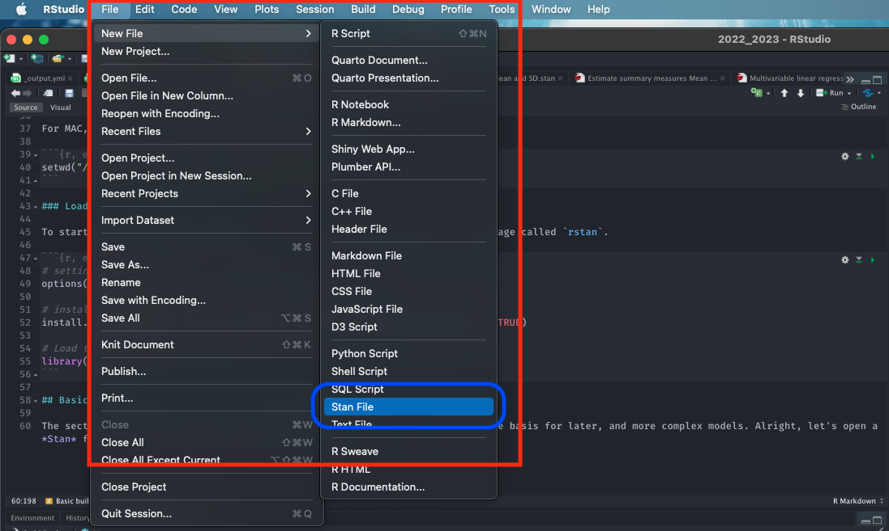

2 Introduction to Probability Distributions and Stan Programming
2.1 Introduction
2.1.2 Learning outcomes
Today’s session aims to introduce you to the basic Stan programming etiquette for Bayesian analysis in RStudio using Stan as an Interface, and producing output and interpreting it’s results. By the end of this session, you should be able to perform the following:
- Develop basic Stan code
- Know how to write and compile a Stan Program to compute the various probability distributions for simple parameters (i.e., mean, standard deviation, a proportion etc.,)
- Know how to compile the results into RStudio for use and interpretation
You can follow the live walkthrough demonstration delivered in the first 1-hour of the practical, and then use the computer practical session to try the tutorials yourself by following the instructions as well as trying out the tasks.
2.1.4 Setting up the work directory
Since, this is our first practical lesson for Day 1, let us create a new folder CPD-course at the desktop location of our computer. Now, create a sub folder called “Day 1” within the CPD-course folder. Here, we will store all our R and Stan scripts. Set the work directory to the Day 1 folder.
For Windows, the code for setting the work directory will be:
For MAC, the code for setting the work directory will be:
2.1.5 Loading packages
To start writing scripts for Bayesian analysis, we will need to load the rstan package.
Note that when you load rstan from cran, you will see some recommendations on using multiple cores for speeding the process. For the best experience, we highly recommend using this code:
This tells RStudio to use multiple core for parallel processing whenever Stan is being implemented. Every time you want to use Stan - make sure to load parallel::detectCores() and rstan_options code.
2.2 Basic building blocks I: About Stan Programming
This section describes how to code up a basic Stan model. This section forms the foundation for later, and more complex models.
2.2.1 Opening a Stan Script in RStudio
Alright, let’s open a Stan file. You can do this by clicking and selecting File > New File > Stan File

When you open a new Stan file, you will be greeted with an untitled script which contains the following bits of code:
//
// This Stan program defines a simple model, with a
// vector of values 'y' modeled as normally distributed
// with mean 'mu' and standard deviation 'sigma'.
//
// Learn more about model development with Stan at:
//
// http://mc-stan.org/users/interfaces/rstan.html
// https://github.com/stan-dev/rstan/wiki/RStan-Getting-Started
//
// The input data is a vector 'y' of length 'N'.
data {
int<lower=0> N;
vector[N] y;
}
// The parameters accepted by the model. Our model
// accepts two parameters 'mu' and 'sigma'.
parameters {
real mu;
real<lower=0> sigma;
}
// The model to be estimated. We model the output
// 'y' to be normally distributed with mean 'mu'
// and standard deviation 'sigma'.
model {
y ~ normal(mu, sigma);
}Do not worry about that - it is just some formalities put there by default by the developers behind rstan. You can delete everything you see in this script as we will build our own basic script from scratch.
Once you have deleted the default information save the empty file in the Day 1 folder naming it Predicting a proportion.stan. Whenever you are saving Stan programme in RStudio always make sure to save it with a .stan ending.